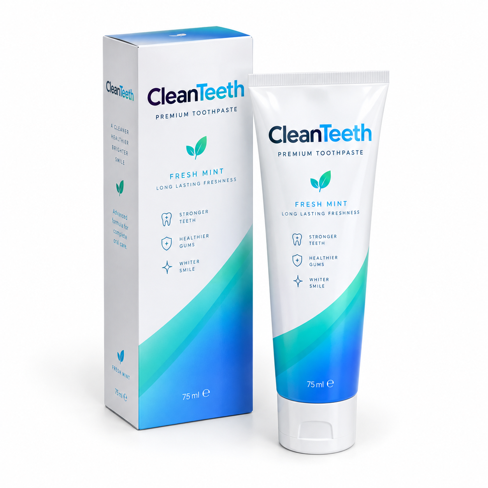

Variedades de la colección
- Clean Teeth Fresh Mint
- Clean Teeth Whitening Pearl
- Clean Teeth Sensitive Care
Bienvenidos a la web oficial de Clean Teeth, tu marca de pasta de dientes de lujo para el cuidado diario.
Clean Teeth es una marca de pasta de dientes de lujo pensada para quienes cuidan su sonrisa cada día. Su fórmula avanzada te deja unos dientes más fuertes, unas encías más sanas, una sonrisa más blanca, y una protección avanzada en tus dientes.
Me encantan los productos de cuidado personal, y por eso he creado esta web. Tener los dientes siempre limpios es una forma sencilla de sentirse bien, cuidar tus dientes y de empezar el día con frescura, por eso recomiendo al 100% Clean Teeth.

Contamos con tres variedades exclusivas en formato de 75 ml adaptadas a cada necesidad:
Todas nuestras pastas están elaboradas con ingredientes seleccionados de sabor menta para proteger el esmalte.
Desde que probé la variedad Fresh Mint noto una sensación de limpieza y frescor que dura toda la mañana. Se nota mucho la calidad frente a las pastas convencionales.
Además, el formato de 75 ml es muy cómodo para llevar de viaje y cunde muchísimo con poca cantidad.
Reseña de Marta G., clienta verificada !
En nuestro catálogo de Cuidado & Salud Dental todas las gamas cuestan < 30€ y tienen una valoración > 4 estrellas:
ID NOMBRE SABOR CANTIDAD PRECIO P01 Clean Teeth Fresh Mint Menta fresca 75.0 ml 24.90 EUR P02 Clean Teeth Whitening Pearl Menta y perla 75.0 ml 29.50 EUR P03 Clean Teeth Sensitive Care Menta suave 75.0 ml 27.95 EUR
Descubre la mejor forma de usar nuestra pasta de dientes: